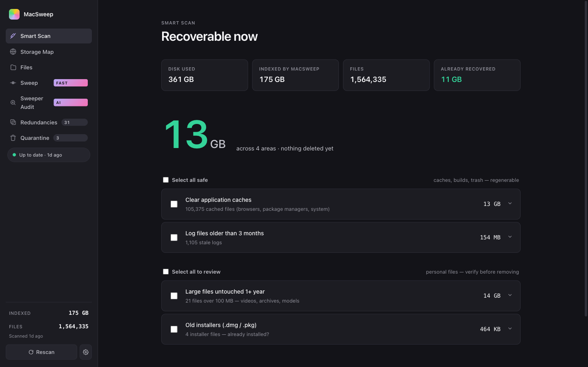
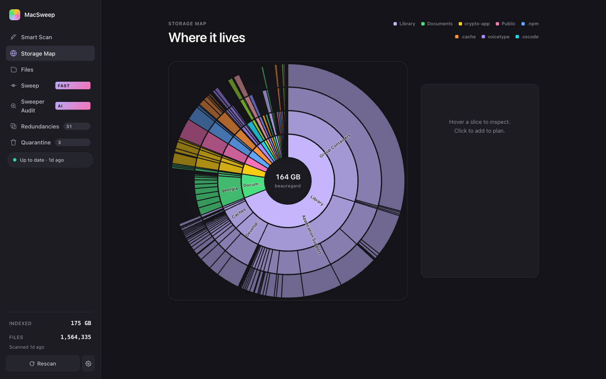
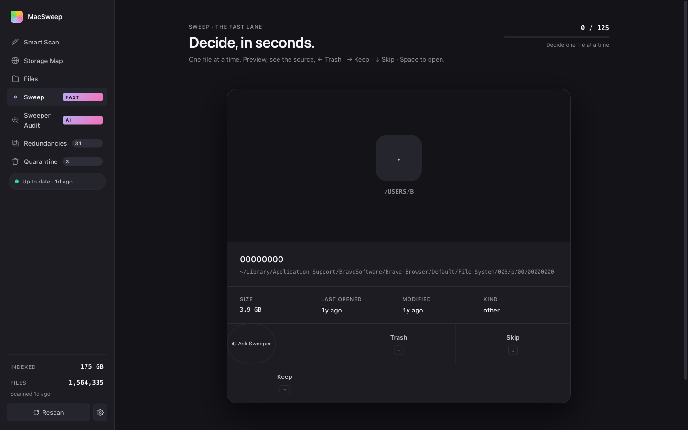

Smart Scan · what MacSweep does
Reclaim your Mac.
Without regret.
MacSweep indexes every file in your home directory, groups them by what matters — caches, build artifacts, forgotten downloads, redundant installers — and lets you decide. Quarantine instead of delete. Thirty days to change your mind. Optional Sweeper AI verdicts via your own ChatGPT subscription. Nothing leaves the machine that you don't see leave.
One person built this because a Mac cleaner once deleted a directory there was no undoing.
The numbers in the sidebar — 1.56 M files, 175 GB indexed — came out of data/index.db on the laptop you can see this page from.
Files quarantined in production: zero.

Storage Map
Where it actually lives.
A sunburst of your home directory by depth. Hover any slice to see its bytes; click to drill in. The same Apple-grade rendering you've seen in DaisyDisk and GrandPerspective — but every slice is selectable, every node has a Reveal in Finder, and the AI verdicts from Sweeper appear right inside the inspector.

Files
Five lenses, one index.
Same files, different cuts. Each tab gives you a different way to find what's worth losing.
- 01Smart picks — ranked by deletability score: size × idle months × file kind. Top of list = highest confidence.
- 02Categories — Caches · Dev artifacts · Trash · Logs · Installers · Downloads · iOS backups · Media · Documents · ML weights · Apps. With sizes and recoverable totals.
- 03Projects — auto-detected git repos, with separate columns for source size vs.
node_modules/target/buildartifact size. Last-touched age. Drill down to nuke artifacts only. - 04Forgotten — files over 100 MB you haven't opened in a year. Excludes obvious system stuff.
- 05Largest — straight rank by size. Same row, different sort.
Sweep · the fast lane
Decide, in seconds.
The fastest way through the ambiguous middle band. One file at a time, full preview, source URL where it was downloaded from, Tinder-style swipe. ← Trash · → Keep · ↓ Skip · Space opens Quick Look. Each Trash builds a queue you commit at the end — nothing acts in real time, you can undo every swipe. Sweeper sits on the card too: ask for a one-line verdict before deciding.

Sweeper · in-app AI agent
Ask Sweeper — should I keep this?
Sweeper is the AI persona built into MacSweep. Click the ◐ Ask Sweeper button on any file — anywhere — and Sweeper sees the metadata only (path, name, size, last-accessed date, kind), never the contents, and returns one of three verdicts with a one-line reason and a confidence score.
"Brave's File System cache will rebuild on next launch."
95% confident
"Football Manager save game from April. You haven't opened it in 6 weeks."
71% confident
"Path contains 'tax' — almost certainly your records."
98% confident
Click ◐ Ask Sweeper
Buttons appear on every file row, every group, every Sweep card, the Storage Map inspector, and inside the Quarantine list.
Metadata leaves your Mac
Just six fields per file. Routed through Integrator using your own ChatGPT subscription — one pairing covers every polistician.ai app. No file contents. Nothing else.
Verdict appears inline
One pill, one sentence, one confidence number. Cached on the file so re-clicks are instant. Disable any time in Settings.
Sweeper Audit · mass verdicts
Two hundred files, one batched call.
Per-file verdicts work for one file at a time. Sweeper Audit works for hundreds. It pre-filters via the deletability heuristic so the LLM only judges the ambiguous middle, batches twenty files per prompt (~30× cheaper than per-file), and writes the results to a sortable table. Filter by verdict + confidence threshold, multi-select the obvious wins, send the lot to Quarantine in one click — still reversible for thirty days, still bounded by the protected-prefix list.
Quarantine · how nothing gets lost
Move, don't delete. Thirty-day undo on everything.
The whole app is one principle, executed everywhere: nothing is destroyed without a recoverable copy. Every "Quarantine" action is a shutil.move into ~/.macsweep_quarantine/<timestamp>/. Restore puts the file back at its exact original path. The only call to os.unlink in the codebase runs after a 30-day timer — and it's logged in the quarantine ledger before it fires.
- ▸Hard-blocked paths —
/System,/Library,~/Library/Mobile Documents,~/Library/CloudStorage, the quarantine root itself. Refused regardless of caller, regardless of AI verdict. - ▸Atomic moves — same-volume
rename(2), no partial states, no "trash but didn't get reclaimed yet". - ▸One-click restore — Quarantine module shows everything; click Restore and the file is back where it was, original timestamps preserved.
- ▸Audit log — every action recorded with original path, size, timestamp, and category. SQLite. Inspectable.
Install · macOS 11+ · Apple Silicon & Intel
Forty seconds end-to-end.
-
01
Download
macsweep-0.1.0.tar.gz from the releases page. ~50 MB. Ad-hoc signed.
-
02
Extract & install
$ tar -xzf macsweep-0.1.0.tar.gz $ cd macsweep-0.1.0 $ ./install.sh
Sets up the Python venv. Takes ~30 seconds the first time.
-
03
Open MacSweep
Right-click
MacSweep.app→ Open the first time (Gatekeeper warning, expected for ad-hoc-signed apps). After that, double-click works normally. Spotlight finds it. -
04
Updates ship in-app
From now on: Settings → Check for updates. New versions arrive via GitHub Releases, verified by SHA-256, swapped atomically. Your scan database, config, and quarantine survive every update.